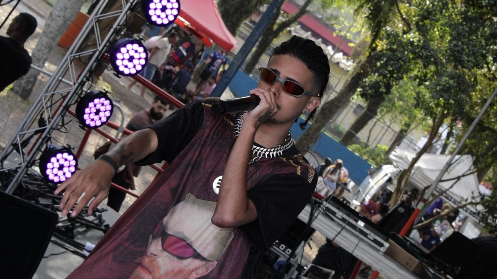
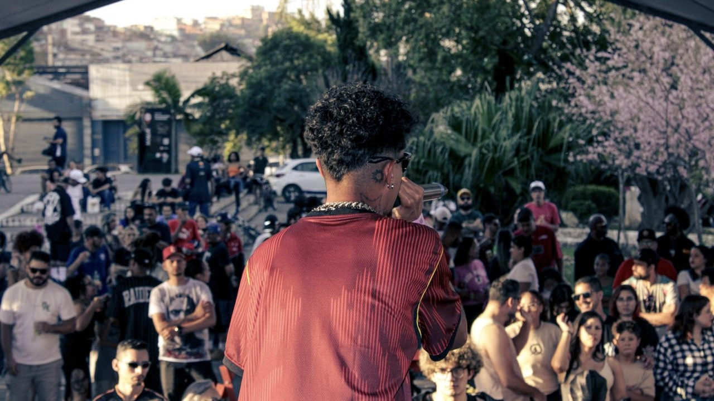

LANÇAMENTO EM DESTAQUE
OUVIR NO SPOTIFY ↗
 IMP RECORDS / ARTISTA
IMP RECORDS / ARTISTA
YGD LUKE
ARTISTA DE MAUÁ · ABC PAULISTA · SÃO PAULO
UMA HISTÓRIA QUE COMEÇA EM MAUÁ.

YGD Luke é um artista de Mauá, cidade localizada na região do ABC Paulista, em São Paulo. É desse território e de suas próprias vivências que parte a construção de sua identidade artística. Sua música nasce de experiências pessoais, sentimentos e observações sobre o mundo ao seu redor.
Mais do que buscar apenas uma sonoridade, YGD Luke encontrou na arte uma maneira de expressar aquilo que muitas vezes é difícil colocar em palavras. Sua trajetória carrega contrastes: de um lado, as marcas da realidade e tudo aquilo que a vida ensina; do outro, os desejos, as ambições e a vontade de alcançar novas possibilidades.
QUANDO A DOR VIROU EXPRESSÃO.
O contato de YGD Luke com a música como forma de expressão ganhou um significado especial em 2018, após a morte de seu pai. Diante de uma perda tão importante, encontrou na música um caminho para desabafar e dar voz aos sentimentos que estava vivendo.
O que começou como uma forma de lidar com a dor passou a representar também uma maneira de compartilhar sua visão de mundo. Em vez de guardar tudo para si, começou a transformar emoções, pensamentos e desejos em arte. A música se tornou um espaço onde suas experiências poderiam ganhar forma, ritmo e identidade.
Essa origem ajuda a compreender a essência de seu trabalho: suas composições não se limitam a um único sentimento ou perspectiva. Elas transitam entre a realidade que viveu, aquilo que observa e os cenários que imagina para o próprio futuro.
YOUNG D E LUKE: DUAS FACES, UMA IDENTIDADE.

O nome YGD Luke carrega uma ideia central para entender sua identidade musical: a união de duas perspectivas que convivem dentro do mesmo artista. Essa dualidade aparece na própria divisão do nome, em que cada parte representa um lado diferente de sua personalidade e de sua visão de mundo.
Young D representa seu lado mais sério e reflexivo. É a parte conectada à realidade, às experiências que viveu, às dificuldades e à maneira como enxerga o mundo. É nesse lado que aparecem os pensamentos mais profundos, as marcas da caminhada e a vontade de transformar vivências em mensagem.
Luke, por sua vez, representa o lado dos desejos, da luxúria, das conquistas e de tudo aquilo que gostaria de ter ou fazer. É a expressão de suas ambições, da busca por uma vida diferente e da liberdade de imaginar aquilo que ainda deseja alcançar.
Essas duas faces não se anulam. Pelo contrário: juntas, formam o contraste que define sua proposta artística. A superação encontra a ostentação; a reflexão divide espaço com o desejo; a realidade conversa com a ambição. YGD Luke transforma essa tensão em identidade, mostrando que uma pessoa pode carregar diferentes vontades, sentimentos e perspectivas ao mesmo tempo.
REFERÊNCIAS QUE AJUDAM A FORMAR SUA SONORIDADE.
Na construção de seu repertório e de sua visão musical, YGD Luke encontra inspiração em artistas de diferentes momentos e vertentes do hip-hop e da música urbana. Entre suas referências estão Duzz, integrante da UCLÃ, Derek, da Recayd Mob, além de nomes internacionais como A$AP Rocky, Travis Scott e Drake.
Essas referências fazem parte do universo que alimenta sua criatividade e ampliam seu contato com diferentes formas de construir música, estética e identidade. Mais do que reproduzir caminhos já existentes, a intenção é absorver elementos dessas influências e conectá-los à própria vivência.
UMA IDENTIDADE EM CONSTANTE CONSTRUÇÃO.
A trajetória de YGD Luke segue em desenvolvimento, guiada pela vontade de transformar experiências em expressão artística. Sua música parte de uma história pessoal, mas encontra espaço para falar também sobre ambição, desejos, conquistas e diferentes maneiras de enxergar a vida.
Entre o lado consciente e o lado movido pelos desejos, YGD Luke constrói uma linguagem própria. Seu trabalho se apoia justamente nesse encontro de opostos: não esconder as dificuldades, mas também não deixar de sonhar com aquilo que ainda pode conquistar.
Esta página acompanha uma caminhada que continua sendo escrita. Novas fases, músicas e experiências poderão ampliar esse retrato, mantendo como ponto de partida a história que fez da música uma forma de desabafo e, depois, uma expressão de identidade.
HISTÓRIAS QUE GANHAM VOZ.

Alguns lançamentos ajudam a representar a identidade musical de YGD Luke e os caminhos que marcam sua trajetória artística. Ouça as faixas em destaque diretamente nos players do Spotify.
LANÇAMENTO EM DESTAQUE
OUVIR NO SPOTIFY ↗
FAIXA 02
LANÇAMENTO EM DESTAQUE
OUVIR NO SPOTIFY ↗
FAIXA 03
LANÇAMENTO EM DESTAQUE
OUVIR NO SPOTIFY ↗
FAIXA 04
“A REALIDADE QUE ME FORMOU. OS SONHOS QUE ME MOVEM.”
ESSA É A DUALIDADE DE YGD LUKE.
DUAS PERSPECTIVAS. UMA SÓ IDENTIDADE.
IMP RECORDS © 2026